NT News
Australia
UFO hunting in the Australian Outback: Finding the hidden ‘alien airport’
A wonderfully specific detail has taken centre stage.
The latest daily picks, linked back to the original sources. Search the room, pick a source, or follow a headline out to the full story.
Record updated: 26 Jun 2026, 08:55 AM AEST
Showing 23 headline candidates from the refresh run completed on 26 Jun 2026, 08:55 AM AEST.
A wonderfully specific detail has taken centre stage.

The headline is already trying not to laugh.

It has the shape of a tiny adventure reported with a straight face.

The scale is doing deadpan comedy.

The headline is already trying not to laugh.

A wonderfully specific detail has taken centre stage.

A mystery is doing a lot of work in a very small sentence.

A very ordinary object has wandered into serious news.
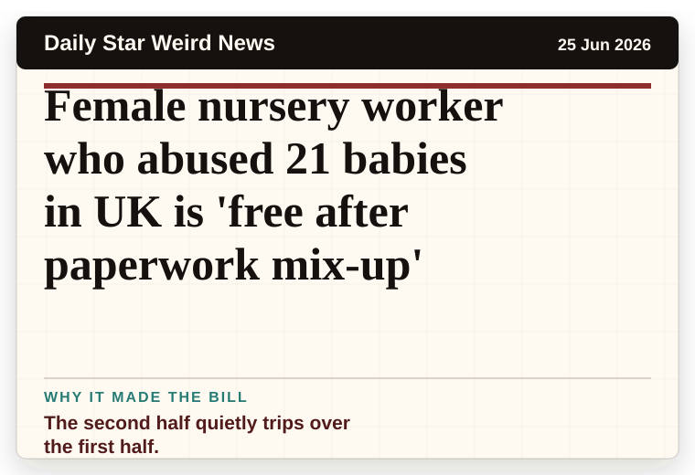
The second half quietly trips over the first half.
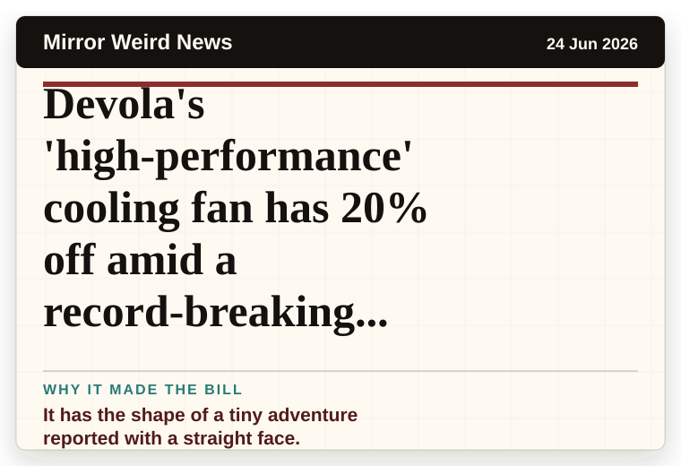
It has the shape of a tiny adventure reported with a straight face.

A wonderfully specific detail has taken centre stage.

The headline is already trying not to laugh.

A mystery is doing a lot of work in a very small sentence.

The word chaos gives it open-mic energy.
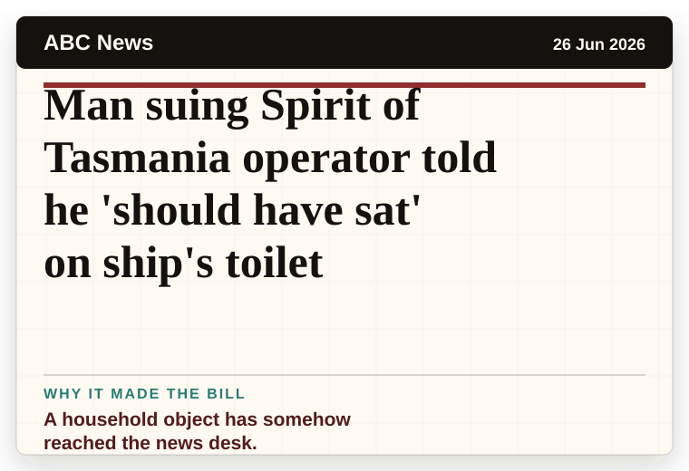
A household object has somehow reached the news desk.
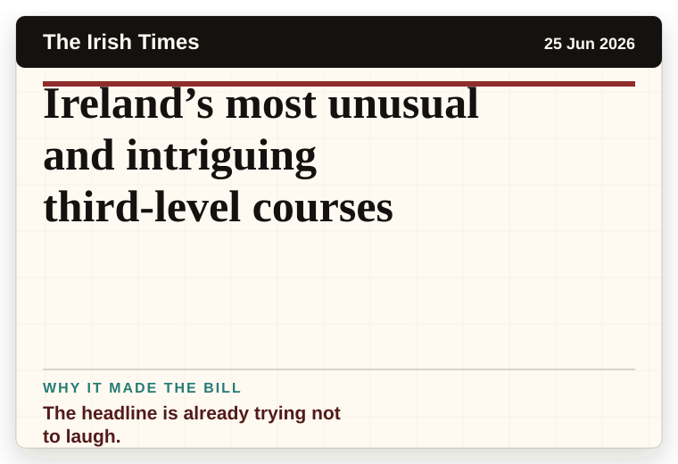
The headline is already trying not to laugh.
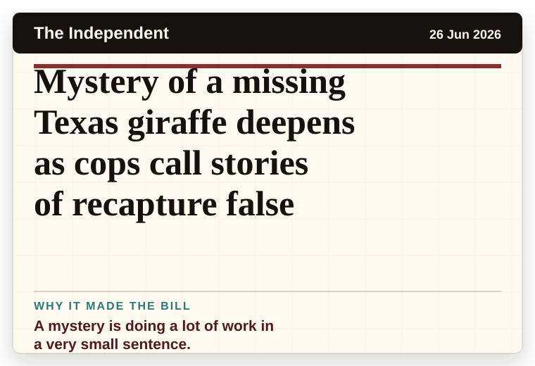
A mystery is doing a lot of work in a very small sentence.
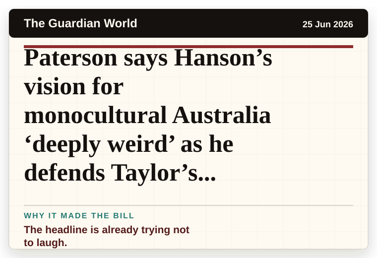
The headline is already trying not to laugh.
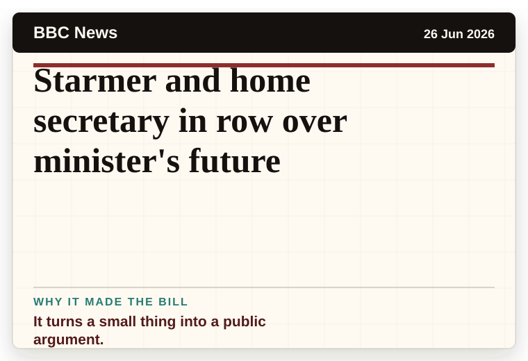
It turns a small thing into a public argument.
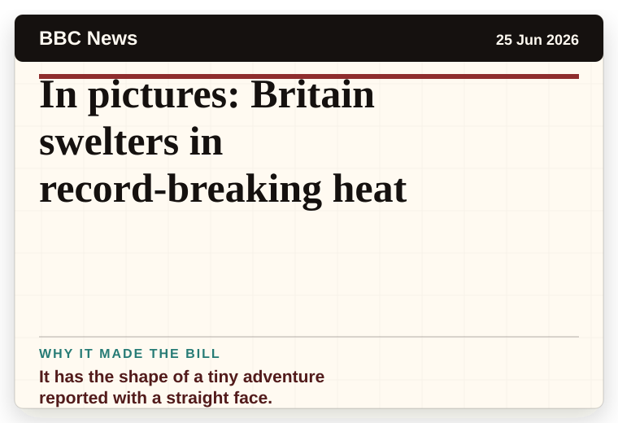
It has the shape of a tiny adventure reported with a straight face.
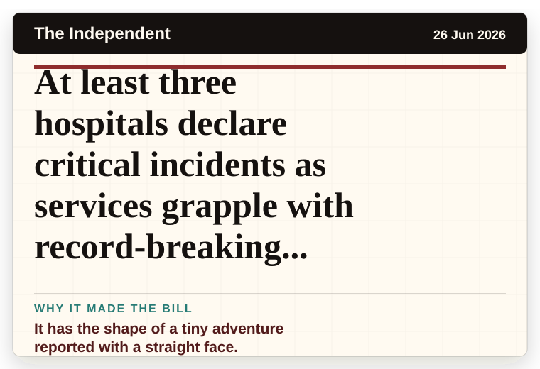
It has the shape of a tiny adventure reported with a straight face.
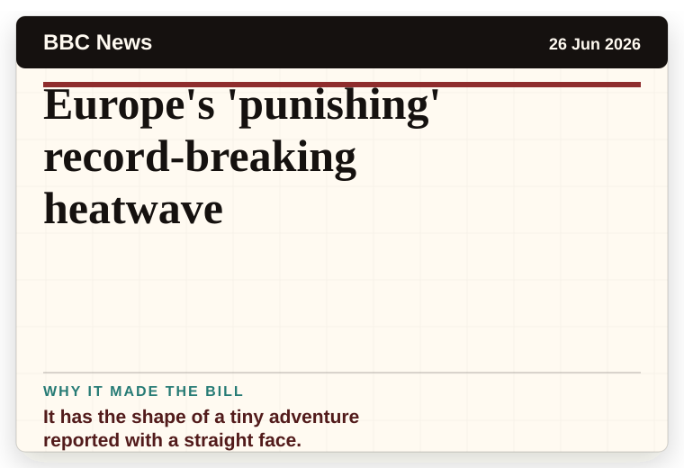
It has the shape of a tiny adventure reported with a straight face.
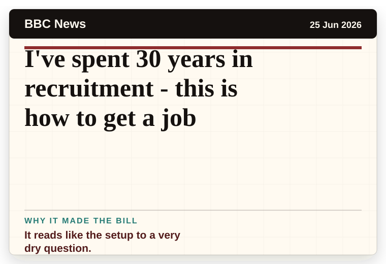
It reads like the setup to a very dry question.